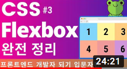

- #dubaiyu
- #eugene
- #유딩딩
클론코딩 유튜브 사이트 따라 만들기(HTML+CSS 연습편, 웹 포트폴리오) | 프론트엔드 개발자 입문편: HTML, CSS, Javascript
5K
0
Share
Save
Report
Up next

- 클론코딩 유튜브 사이트 따라 만들기(HTML+CSS 연습편, 웹 포트폴리오) | 프론트엔드 개발자 입문편: HTML, CSS, Javascript
- dubaiyu
- 1.8k views
- 클론코딩 유튜브 사이트 따라 만들기(HTML+CSS 연습편, 웹 포트폴리오) | 프론트엔드 개발자 입문편: HTML, CSS, Javascript
- dubaiyu
- 1.8k views
- 클론코딩 유튜브 사이트 따라 만들기(HTML+CSS 연습편, 웹 포트폴리오) | 프론트엔드 개발자 입문편: HTML, CSS, Javascript
- dubaiyu2
- 1.8k views